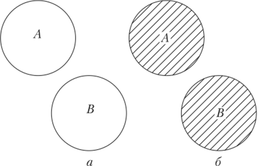

Биномиалды үлестірім
Биномиалды үлестірім - дискретті кездейсоқ шаманың n тәжірибеде бірдей p ықтималдықпен орын алу
ықтималдығын модельдейтін үлестірім. Оның формуласы: 
Мұндағы n - жасалуы қажет деп есептелінетін барлық тәжірибе саны, p - 1 тәжірибенің сәтті өту ықтималдығы, сәйкесінше (1-p) - тәжірибенің сәтсіз өту ықтималдығы, ал x - 0-ден n-ге дейінгі бүтін кездейсоқ шама - болуы мүмкін сәтті нәтиже, ал (n-x) - х сәтті нәтиже болғанда орын алатын сәтсіз нәтиже саны, яғни бұл үлестірім n тәжірибеде әрбір болуы мүмкін сәтті тәжірибенің ықтималдығын модельдейді. Бұл жерде сіз енгізген ақпарат бойынша әрбір сәтті және сәтсіз нәтиже ықтималдықтарының бір біріне көбейтіліп отырған себебі (м/с:жасалатын тәжірибелер саны 3, ал графкте x мәні 2-ге тең болған кезде алғашқы С ескерілмегенде орындалатын үрдіс: p*p*(1-p)) - бұл үлестірім әрбір келесі тәжірибе алдыңғы тәжірибеге тәуелсіз болатын жағдайларды модельдейді, ал бірнеше тәуелсіз тәжірибелердің белгілі-бір нәтижелерінің бір уқытта орын алу ықтималдығын табу үшін ықтималдықтарды бір-біріне көбейту қажет. (Неге: мысалы, тиынды екі рез лақтырғанда да елтаңба түсу ықтималдығын табу барысында алғашқы рет лақтырған жағдайдың 50%-нда елтаңба түсетін болса, келесі рет лақтырғанда, алғашқы лақтыру әлі жасалмағандықан, 50%-дың 50%-нда елтаңба түседі деп есептелінеді. Демек, екі рет елтаңба түсу ықтималдығы 50%*50%=25%). Формуланың барысында берілген С - теру формуласы. Оның қолданылатын себебі - ешбір тәжірибе әлі болған жоқ деп есептелінетіндіктен, олардың қандай реттілікте болатындығы белгісіз, (м/с: тиын лақтырғанда екі рет елтаңба түскенде реттілік өзгергеннен ештеңе болмаса да, бір рет сан, бір рет елтаңбаның реттілікті ескермей түсуінің екі мүмкін жолы бар: бірінші рет сан, екінші рет елтаңба, немесе бірінші рет сан, екінші рет елтаңба, сондықтан бұл жағдайдың ықтималдығы былайша табылады: 50%*50%*2=50%.), ал бұл үлестірімде нәтижелер реттілігі емес, саны ғана маңызды, сондықтан теру формуласының көмегімен барлық мүмкін реттіліктің санын білініп, ол тек бір реттілікте болған тәжірибелердің нәтижесінің ықтималдығын есептейтін өрнекке көбейтіледі - дәл осындай тәжірибелер санының реттілікті ескермегендегі болуының қанша жолы болса, демек бір жағдайдың ықтималдығы сонша еселенеді.
Ал екінші көрінетін функция-кумулятивті биномиалды үлестірім функциясы
Оның формуласы:  . Бұл үлестірім n тәжірибеде х-тен көп емес: x
. Бұл үлестірім n тәжірибеде х-тен көп емес: x сәтті нәтижеге қол
жеткізу ықтималдығын модельдейді және оның мағынасын түсіну оңай: мысалы жасалатын тәжірибелер саны ретінде
сіз 3 енгіздіңіз. Егер бұл жағдайда 0 сәтті нәтиже алу ықтималдығына 1 сәтті нәтиже алу ықтималдығын қосылса,
0 немесе 1 сәтті нәтижеге қол жеткізу ықтималдығы шығады (бірнеше тәуелсіз тәжірибелердің ықтималдықтары
қосылса, барлық нәтижелердің біреуіне қол жеткізу ықтималдығы табылады
сәтті нәтижеге қол
жеткізу ықтималдығын модельдейді және оның мағынасын түсіну оңай: мысалы жасалатын тәжірибелер саны ретінде
сіз 3 енгіздіңіз. Егер бұл жағдайда 0 сәтті нәтиже алу ықтималдығына 1 сәтті нәтиже алу ықтималдығын қосылса,
0 немесе 1 сәтті нәтижеге қол жеткізу ықтималдығы шығады (бірнеше тәуелсіз тәжірибелердің ықтималдықтары
қосылса, барлық нәтижелердің біреуіне қол жеткізу ықтималдығы табылады

), ал бұл 1-ден көп емес сәтті нәтиже алу ықтималдығына тең. Ал егер осы шыққан ықтималдыққа 2 және 3 сәтті нәтиже алу ықтималдығы қосылса, өрнек мәні 1-ге тең болады, себебі жасалынуы қажет тәжірибелер саны 3-у болса, не 0, не 1, не 2, не 3 сәтті нәтиженің болу ықтималдығы 100%.Сіз енгізілуі қажет ақпаратты енгізсеңіз, бірінші графикте x осіндегі x мәні бойынша осынша сәтті нәтижеге қол жеткізудің ықтималдығын у осі бойынша көресіз. Белгілі бір х мәнінде n-x өрнегін орындасаңыз, y осі n-x сәтсіз нәтижеге қол жеткізу ықтималдығын көрсететін болады. Егер белгілі бір x мәніндегі y мәнін 1-ден азайтсаңыз: (1-у), n тәжірибеде x-тен басқа сәтті нәтижеге қол жеткізу ықтималдығын таба аласыз (м/с: 5 тәжірибеде 4 сәтті нәтиже алу ықтималдығы 0,3 (30%) болса, 4 сәтті нәтижеге қол жеткізбеу ықтималдығы 70%)
Екінші графикте n тәжірибеде х-тен көп емес сәтті нәтижеге қол жеткізу ықтималдығын y осі бойынша көресіз.
Егер белгілі бір x мәніндегі y мәнін 1-ден азайтсаңыз: (1-у), n тәжірибеде х-тен кем емес: x сәтті нәтиже
алу ықтималдығын көресіз: егер Â мен A қарама-қарсы жағдайлар болса, 1-P(A)=P(Â)
сәтті нәтиже
алу ықтималдығын көресіз: егер Â мен A қарама-қарсы жағдайлар болса, 1-P(A)=P(Â)